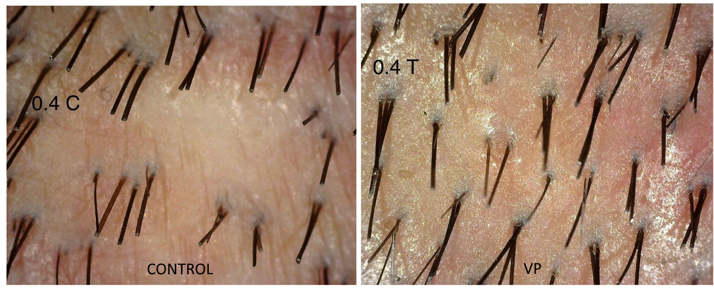
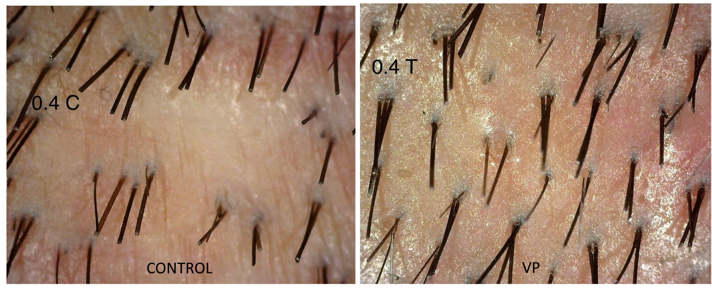

7 Jun 2024
Chu et al
|
Fibroblast Yap/Taz Signaling in Extracellular Matrix Homeostasis and Tissue Fibrosis
|
Explores the role of Yes-associated protein (YAP) and Transcriptional co-activator with PDZ-binding motif (TAZ) in fibroblast signaling and their impact on tissue fibrosis |
4 Jun 2024
Kang et al
|
Self-Powered Electrical Bandage Based on Body-Coupled Energy Harvesting
|
A self-powered electrical bandage (SEB) that utilizes body-coupled energy was developed to promote faster and scarless wound recovery. |
3 Jun 2024
Shuo-Bing Yang et al
|
Rapid and Scar Free Wound Repair by Using a Biologically Flexible and Conductive Dressing Under Electrical Stimulation
|
A novel biocompatible liquid metal composite wound dressing (LGPU), combined with electrical stimulation, accelerates wound healing, promotes hair follicle regeneration, and reduced scarring. |
2024
Zhong Zheng et al
|
Preclinical And Clinical Development Of Sli-F06, A Novel Dermal Fibroblast Modulating Drug, In Cutaneous Wound Healing
|
SLI-FO6 reduced scar surface area in humans by 24.6% in high-tension abdominoplasty wounds, and achieved a 56% scar index reduction in red duroc pigs. |
31 May 2024
Rogovaya et al
|
In vitro and in vivo Evaluation of Antifibrotic Properties of Verteporfin in a Composition of a Collagen Scaffold
|
VP reduced fibrosis in human cells, but when combined with collagen gel, it disrupts scarless wound healing due to incompatible mechanisms. |
29 May 2024
Fu et al
|
Shape-Fixing Hydrogel Promotes Scarless Healing of Wounds Under Tension
|
A new hydrogel system, called HTA, reduces wound tension and inhibits the fibrotic response, leading to improved tissue regeneration. |
27 May 2024
Kang et al
|
Advances of Nanobiomaterials for Treating Skin Pathological Fibrosis
|
Explores the potential of nanobiomaterials in managing skin fibrosis, particularly hypertrophic scars. |
23 May 2024
Hao et al
|
Engrailed-1 (EN-1) inactivation leads to scarless skin wound healing through extracellular matrix (ECM) remodeling
|
Achieved scarless healing with VP in rabbit ear. This paper appears to be somewhat of a repeat of the first Stanford VP paper, so it seems China is catching up. |
15 May 2024
Xusen Wang et al
|
3D printing of Rg3-loaded hydrogel scaffolds: anti-inflammatory and scar-formation related collagen inhibitory effects for scar-free wound healing
|
A novel dermal extracellular matrix (DECM) hydrogel scaffold loaded with ginsenoside Rg3 (Rg3) was developed and achieved scarless healing in a mouse. |
13 May 2024
Takaya et al
|
Twist2 contributes to skin regeneration and hair follicle formation in mouse fetuses
|
Identified Twist2 protein to be upregulated in regenerated mouse fetus skin and downregulated in scarred mouse skin. Knockout of Twist2 protein in usually scarless mouse fetuses resulted in inhibited regeneration. |
8 May 2024
Zhong et al
|
Electrical and immune stimulation-based hydrogels synergistically realize scarless wound healing via amplifying endogenous electrophysiological function and promoting Macrophage Phenotype-Switching
|
A new conductive hydrogel, sHA/G-GM, has been developed to promote scarless wound healing through electrical and immune stimulation. |
2 May 2024
Nong et al
|
Verteporfin inhibits TGF-β signaling by disrupting the Smad2/3–Smad4 interaction
|
Identified VP to inhibit the Smad2/3-Smad4 interaction in TGF-β signaling. |
1 May 2024
Murthy et al
|
Prevention of Post-surgical Scarring
|
Summarizes various interventions and methods for preventing post-surgical scarring. |
11 Apr 2024
Lyu et al
|
A differential-targeting core–shell microneedle patch with coordinated and prolonged release of mangiferin and MSC-derived exosomes for scarless skin regeneration
|
A microneedle patch was developed with gelatin methacryloyl shell containing mangiferin and a poly (lactide-co-propylene glycol-co-lactide) dimethacrylates core loaded with exosomes and achieved reduced scar formation in mice. |
5 Apr 2024
Eslahi et al
|
How biomimetic nanofibers advance the realm of cutaneous wound management: The state-of-the-art and future prospects
|
Biomimetic nanofibers show promise in improving wound healing and skin tissue regeneration due to their tunable features and ability to mimic the architecture of native extracellular matrix. |
4 Apr 2024
Xingyan Liu et al
|
Identification of IGF2 promotes skin wound healing by co-expression analysis
|
Identifies IGF2 as a potential factor in promoting scarless wound healing in human oral mucosa. |
28 Mar 2024
Das et al
|
A study of scarless wound healing through programmed inflammation, proliferation and maturation using a redox balancing nanogel
|
A redox balancing nanogel was developed and tested on preclinical mice models to promote scarless wound healing. |
3 Mar 2024
Almadori et al
|
Scarring and Skin Fibrosis Reversal with Regenerative Surgery and Stem Cell Therapy
|
Adipose-derived stem cells effectively modify scar tissue and fibrosis by suppressing extracellular matrix synthesis and promoting degradation |
13 Feb 2024
Shang et al
|
Dermal papilla cell-derived exosomes promote hair follicle regeneration during wound healing by activating Wnt/β‐catenin signaling pathway
|
Dermal papilla cell-derived exosomes (DPC-Exos) promote hair follicle regeneration during wound healing. In addition, DPC-Exos can accelerate wound healing and promote hair follicle regeneration in vivo. |
11 Jan 2024
Lasaosa et al
|
Nature-Inspired Scarless Healing: Guiding Biomaterials Design for Advanced Therapies
|
Discusses the use of biomaterials in scar reduction and the importance of understanding natural models of scarless healing. Provides an overview of the key processes involved in scarless healing. |
12 Dec 2023
Peng Wang et al
|
Verteporfin-Loaded Bioadhesive Nanoparticles for the Prevention of Hypertrophic Scar
|
VP-loaded bioadhesive nanoparticles (VP/BNPs) have been developed to significantly prevent hypertrophic scarring. |
9 Dec 2023
Ying et al
|
The transformation of multifunctional bio-patch to hydrogel on skin wounds for efficient scarless wound healing
|
A new bio-patch made of 3A achieved scarless healing in mice. |
19 Nov 2023
Yihui Zhang et al
|
Ag nanocomposite hydrogels with immune and regenerative microenvironment regulation promote scarless healing of infected wounds
|
Ag nanocomposite hydrogels with Ag nanoparticles achieved scarless healing in mice. |
15 Sep 2023
Wei et al
|
Antimicrobial hydrogel microneedle loading verteporfin promotes skin regeneration by blocking mechanotransduction signaling
|
A biocompatible VP hydrogel microneedle system was developed for scarless wound healing. |
8 Sep 2023
Jiang-Tao Yang et al
|
An Injectable Composite Hydrogel of Verteporfin-Bonded Carboxymethyl Chitosan and Oxidized Sodium Alginate Facilitates Scarless Full-Thickness Skin Regeneration
|
A new VP hydrogel composite (VP-CMCS-OSA) has been developed for scarless skin regeneration. Successful results in full-thickness skin defect model, indicating potential for scarless skin regeneration. |
26 Jul 2023
Kun Chen et al
|
Hyaluronic acid-modified and verteporfin-loaded polylactic acid nanogels promote scarless wound healing by accelerating wound re-epithelialization and controlling scar formation
|
A nanogel made of hyaluronic acid and VP-loaded polylactic acid was developed to promote scarless wound healing in a rabbit. |
3 Jul 2023
Grzelak et al
|
Pharmacological YAP activation promotes regenerative repair of cutaneous wounds
|
Identified scarless healing displayed by spiny mouse as caused by YAP activation, not inhibition, and they find it interesting that other studies came to the opposite conclusion. |
10 Jun 2023
Ying Zhang et al
|
Scarless wound healing programmed by core-shell microneedles
|
A VP microneedle patch with programmed functions (PF-MNs) has been designed to promote scarless healing in a rabbit by targeting different stages of the healing process. |
18 Apr 2023
Berry et al
|
The effects of mechanical force on fibroblast behavior in cutaneous injury
|
Discusses the effects of mechanical force on fibroblast behavior and reviews the mechanisms involved in mechano-sensing and the potential for inhibiting them to promote wound healing and reduce scar formation. |
4 Apr 2023
Griffin et al
|
Piezo inhibition prevents and rescues scarring by targeting the adipocyte to fibroblast transition
|
Inhibiting the protein Piezo can prevent and reverse scarring by stopping the conversion of fat cells into scar-forming fibroblasts. |
25 May 2023
McKinley et al
|
Emerging frontiers in regenerative medicine
|
Review of the progress and challenges for regenerative medicine. |
27 Mar 2023
Abbas et al
|
Establishing a Xenograft Model with CD-1 Nude Mice to Study Human Skin Wound Repair
|
A postnatal human skin xenograft model was developed using athymic mice, allowing for the study of human skin wound repair in a preclinical setting. This was used in the human foreskin xenograft trial. |
8 Mar 2023
Huicong Zhang et al
|
Efficient scarless skin regeneration enabled by loading micronized amnion in a bioinspired adhesive wound dressing
|
A bioactive scaffold was made from the skin secretion of the Chinese giant salamander, combined with micronized amnion, to promote efficient and scarless skin regeneration. |
9 Nov 2022
Chen Zhang et al
|
Biodegradable hydrogels with photodynamic antibacterial activity promote wound healing and mitigate scar formation
|
A biodegradable hydrogel has been developed that can effectively prevent scar formation by releasing a small dose of VP. |
Oct 2022
Mascharak et al
|
Inhibiting Yes-associated Protein Prevents Scarring And Promotes Regeneration In A Large Animal Model Of Wound Repair
|
Achieved scarless healing with VP in red Duroc pigs.
Achieved significantly reduced scarring with VP in human foreskin transplanted on a mouse, stating the reduced scarring didn't have anything to do with it being attached to a mouse.
|
17 Aug 2022
Cavanzo et al
|
Verteporfin ameliorates fibrotic aspects of Dupuytren’s disease nodular fibroblasts irrespective the activation state of the cells
|
VP has been found to have strong anti-fibrotic properties in Dupuytren's disease, inhibiting the activation of fibroblasts into myofibroblasts. This effect is not dependent on photo-activation and can reverse the activation status of fibroblasts. |
15 Jul 2022
Veronese et al
|
V-EMF treatment of facial scar: First results
|
Evaluates the effectiveness of the use of electromagnetic fields and negative pressure treatment (V-EMF) for facial scars. |
13 Jun 2022
Mascharak et al
|
Modulating Cellular Responses to Mechanical Forces to Promote Wound Regeneration
|
Review of the potential for promoting wound regeneration by modulating cellular responses to mechanical forces. |
31 Mar 2022
Xiaojie et al
|
Scarless wound healing: Current insights from the perspectives of TGF-β, KGF-1, and KGF-2
|
Highlights the potential of inhibiting TGF-β and administering KGF-1 and KGF-2 to promote scarless wound healing. |
3 Feb 2022
Mascharak et al
|
Multi-omic analysis reveals divergent molecular events in scarring and regenerative wound healing
|
Identifies key genes and pathways that drive either scarring or regeneration. |
3 Feb 2022
Valerie Horsley
|
Cut out that YAPping: Mechanisms to reduce scar formation
|
Explains the role of Yes-Activated-Protein (YAP) in scarring. |
24 Jan 2022
Mascharak et al
|
Multi-omic analysis reveals divergent molecular events in scarring and regenerative wound healing
|
Explores the molecular events involved in scarring and regenerative wound healing and identifies genes and pathways that drive them. |
1 Dec 2021
Tang et al
|
Micro-compound tissue grafting for repairing linear scars
|
Transplanting cores of full-thickness virgin skin into removed cores of a thin linear scar are able to achieve a visually scarless result. |
25 Jun 2021
Lutong Liu et al
|
Asiaticoside-laden silk nanofiber hydrogels to regulate inflammation and angiogenesis for scarless skin regeneration
|
Silk nanofiber hydrogels loaded with asiaticoside were found to effectively regulate inflammation and angiogenesis, leading to scarless skin regeneration in both in human cells and living mice. |
24 May 2021
Durant et al
|
Finding Solutions for Fibrosis: Understanding the Innate Mechanisms Used by Super‐Regenerator Vertebrates to Combat Scarring
|
Explores the differences between fibrotic healing and scar-free healing in regenerative animals. Aims to identify the molecular and physiological variances that contribute to these disparate outcomes in wound repair |
23 Apr 2021
Mascharak et al
|
Preventing Engrailed-1 activation in fibroblasts yields wound regeneration without scarring
|
Achieved scarless healing with VP in mice. |
27 Apr 2020
Xin Zheng et al
|
Microskin-Inspired Injectable MSC-Laden Hydrogels for Scarless Wound Healing with Hair Follicles
|
The combination of MSCs and injectable silk nanofiber hydrogels promotes angiogenesis and macrophage phenotype switching, resulting in scarless skin regeneration. |
30 Oct 2019
Zhao et al
|
Resveratrol-loaded peptide-hydrogels inhibit scar formation in wound healing through suppressing inflammation
|
Resveratrol-loaded peptide-hydrogels, which have a similar structure to natural extracellular matrix, were able to slowly release resveratrol and accelerate wound healing in rat skin damage models. |
29 Apr 2019
Yulong Zhang et al
|
Abstract QS40: A Novel Bioactive Suture That Accelerates Wound Tensile Strength Re-establishment And Enhances Wound Healing
|
SLI-F06 coated sutures were developed to significantly promote wound healing by accelerating mechanical strength re-establishment and improving gross appearance in a Yorkshire pig.
|
6 Dec 2018
Mohede et al
|
Verteporfin as a Medical Treatment in Peyronie’s Disease
|
Results showed that VP significantly decreased the expression of fibrosis-related genes in myofibroblasts derived from PD plaques, suggesting its potential as a treatment for PD. |
16 Apr 2018
Sun et al
|
Engineering Pro-Regenerative Hydrogels for Scarless Wound Healing
|
Discusses the role of stem cells and growth factors in the wound healing process and focuses on recent advancements in engineering pro-regenerative scaffolds for skin regeneration. |
15 Mar 2018
Gu et al
|
Use of Condensed Nanofat Combined With Fat Grafts to Treat Atrophic Scars
|
Condensed nanofat combined with traditional fat grafts are able to perfectly flatten any atrophic scar. |
1 Feb 2018
Jiang et al
|
Fibromodulin reduces scar size and increases scar tensile strength in normal and excessive‐mechanical‐loading porcine cutaneous wounds
|
Administering the extracellular matrix molecule fibromodulin (FMOD) can reduce scar size, increase tensile strength, and improve collagen organization in red duroc pigs. |
13 Oct 2017
Zhong Zheng et al
|
Fibromodulin reduces scar formation in adult cutaneous wounds by eliciting a fetal-like phenotype
|
Fibromodulin (FMOD) reduces scar formation and increases scar strength in adult wounds by eliciting a fetal-like phenotype in adult dermal fibroblasts. |
25 Sep 2017
Sun et al
|
Pro-Regenerative Hydrogel Restores Scarless Skin during Cutaneous Wound Healing
|
A new hydrogel promotes regenerative wound healing by regulating the M2 macrophage phenotype. It has been shown to successfully regenerate skin and promote hair regrowth in both murine and porcine models. |
27 Oct 2016
Szeto et al
|
YAP/TAZ Are Mechanoregulators of TGF-β-Smad Signaling and Renal Fibrogenesis
|
Identifies YAP/TAZ roles in fibrosis and identifies VP as a YAP inhibitor. Results show VP in mice succesfully reduces fibrosis. |
22 Sep 2016
Zhong Zheng et al
|
Fibromodulin Is Essential for Fetal-Type Scarless Cutaneous Wound Healing
|
Identifies fibromodulin as essential for fetal-type scarless wound healing. This study found that loss of fibromodulin prevents early-gestation fetal wounds from healing without scars, while administering fibromodulin can restore scarless healing in late-gestation fetal wounds. |
Mar 2015
Walmsley et al
|
Scarless wound healing: chasing the holy grail
|
Reviews the stages of wound healing, strategies to reduce scarring, and the potential for scarless regeneration through skin stem/progenitor cells. |
26 May 2014
Ud-Din et al
|
Regenerative healing, scar-free healing and scar formation across the species: current concepts and future perspectives
|
Discusses the differences in healing and scar formation across various species, highlighting the potential for regenerative healing in non-amniote vertebrates and mammalian fetuses. |
26 Oct 2012
Lo et al
|
Scarless fetal skin wound healing update
|
Discusses the unique properties of fetal cells, extracellular matrix, cytokine profile, and gene expression contribute to scarless healing. |
 
